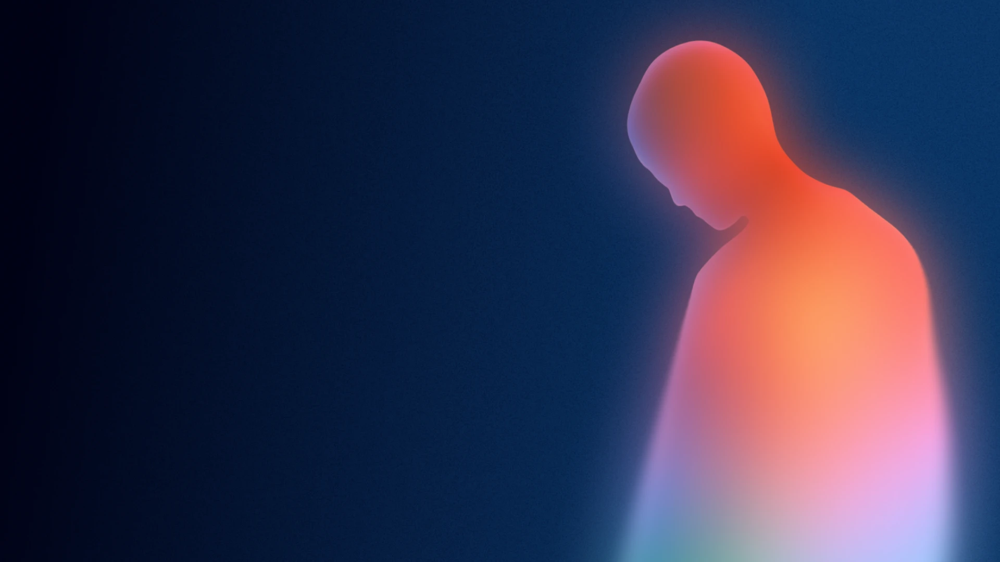

DANI: как вы работаете с неопределённостью?
Чем больше ответственность, тем чаще приходится принимать решения без единственного правильного ответа. Данных не хватает, планы меняются, а команда ждёт от вас ясности. Навыки работы с неопределённостью можно развивать — и начать стоит с понимания того, как вы обычно реагируете и действуете в таких ситуациях.
Этот тест — русская адаптация d.school Ambiguity Navigation Instrument (DANI), опросника самооценки, разработанного в Стэнфордской школе дизайна d.school. Он рассматривает две стороны работы с неопределённостью:
По результатам вы увидите свои сильные стороны и получите рекомендации, упражнения и книги для развития навыков, которым стоит уделить внимание.
Как вы воспринимаете ситуации, в которых нет ясности и готового ответа.
Что вы предпринимаете, чтобы разобраться в ситуации и двигаться вперёд.
Как пройти
Для каждого из 20 утверждений выберите один ответ: никогда, редко, иногда, часто или всегда.
Отвечайте так, как обычно бывает, а не как хотелось бы. Здесь нет правильных или неправильных ответов. Результат рассчитается автоматически.
Ваши баллы
Четыре сочетания: отношение × действия
Важно
DANI — инструмент самооценки, и это создаёт определённые ограничения в его достоверности и валидности. Он показывает скорее общую тенденцию, но не ставит никаких диагнозов. Авторы теста продолжают работать над его улучшением и соответствием всем научным критериям.